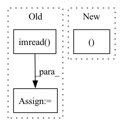

Pattern ID :16298

Before Change
img_tensor: shape[B,C,H,W]
// rgb_img = img_tensor.squeeze(0).permute(1, 2, 0).cpu().numpy() // [1,C,H,W]->[H,W,C]
bgr_img = cv2.imread(img_path, 1)
bgr_img = cv2.resize(bgr_img, (224, 224), interpolation=cv2.INTER_CUBIC)
bgr_img = np.float32(bgr_img) / 255 // 归一化
with GradCAM(model=model, target_layers=target_layers) as cam:
After Change
// ImageNet均值、方差
t_mean = torch.FloatTensor((0.485, 0.456, 0.406)).view(3, 1, 1).expand(3, 224, 224)
t_std = torch.FloatTensor((0.229, 0.224, 0.225)).view(3, 1, 1).expand(3, 224, 224)
// 1. [B,C,H,W]->[C,H,W] 2. 反归一化
rgb_img = img_tensor.cpu().squeeze(0) * t_std + t_mean
In pattern: SUPERPATTERN
Frequency: 5
Non-data size: 3
Instances
Fragment ID: 54521756
Project Name: bobo0810/classification
Commit Name: 1836c97e5c32c77787b9748173377cbabfa908dc
Time: 2022-03-30
Author: lipengbo@kanzhun.com
File Name: Utils/tools.py
M Class Name: AnonimousClass
N Class Name: AnonimousClass
M Method Name: vis_cam(4)
N Method Name: vis_cam(4)
M Parent Class:
N Parent Class:
M File Name: Utils/tools.py
N File Name: Utils/tools.py
M Start Line: 105
M End Line: 120
N Start Line: 130
N End Line: 161
'>
Before Change
def evaluate_performance(real_image, fake_image):
prediction = cv2.imread(fake_image)
target = cv2.imread(real_image)
error_value = []
for i in range(len(target)):
error_value.append((target[i] - prediction[i]) ** 2)
After Change
mse = ((img1 - img2) ** 2).data.mean()
psnr = 10 * math.log10(255.0 ** 2 / mse)
(_, channel, _, _) = img1.size()
window = create_window(window_size, channel)
if img1.is_cuda:
'>
Fragment ID: 54521753
Project Name: lornatang/srgan-pytorch
Commit Name: cb04075c03b2a9f9b49c1e6d6edb8de1f6647249
Time: 2020-09-01
Author: liuchangyu1111@gmail.com
File Name: srgan_pytorch/utils.py
M Class Name: AnonimousClass
N Class Name: AnonimousClass
M Method Name: evaluate_performance(4)
N Method Name: evaluate_performance(2)
M Parent Class:
N Parent Class:
M File Name: srgan_pytorch/utils.py
N File Name: srgan_pytorch/utils.py
M Start Line: 31
M End Line: 45
N Start Line: 34
N End Line: 47
'>
Before Change
img, target
img_id = self.ids[index]
img = cv2.imread(self._imgpath % img_id, cv2.IMREAD_COLOR)
height, width, _ = img.shape
target = self.load_anno(index)
After Change
img, target
if self.imgs is not None:
target, img_info, resized_info = self.annotations[index]
pad_img = self.imgs[index]
img = pad_img[: resized_info[0], : resized_info[1], :].copy()
else:
'>
Fragment ID: 54521768
Project Name: megvii-basedetection/yolox
Commit Name: c9fe0aae2db90adccc90f7e5a16f044bf110c816
Time: 2021-08-19
Author: ruinmessi@gmail.com
File Name: yolox/data/datasets/voc.py
M Class Name: VOCDetection
N Class Name: VOCDetection
M Method Name: pull_item(2)
N Method Name: pull_item(2)
M Parent Class: Dataset
N Parent Class: Dataset
M File Name: yolox/data/datasets/voc.py
N File Name: yolox/data/datasets/voc.py
M Start Line: 141
M End Line: 147
N Start Line: 235
N End Line: 243
'>
Before Change
def get_train_valid_data(image_folder, mask_folder):
image_list = [cv2.imread(img) for img in glob.glob(os.path.join(image_folder, "*.png"))]
mask_list = [cv2.imread(img, cv2.IMREAD_GRAYSCALE) for img in glob.glob(os.path.join(mask_folder, "*.png"))]
train_ds = RoofTopDataset(image_list, mask_list, transform=train_trfm)
valid_ds = RoofTopDataset(image_list, mask_list, transform=val_trfm)
return train_ds, valid_ds
After Change
def get_train_valid_data(image_folder, mask_folder):
image_list, mask_list = [], []
with concurrent.futures.ProcessPoolExecutor() as executor:
image_files = glob.glob(image_folder + "/*.png")
'>
Fragment ID: 54521748
Project Name: chanceqz/rooftopsegmatation
Commit Name: 73672cb80953fd4a7f7faea25857fa5353b4d5ea
Time: 2021-04-26
Author: qz_gis@163.com
File Name: roottop_dataset.py
M Class Name: AnonimousClass
N Class Name: AnonimousClass
M Method Name: get_train_valid_data(2)
N Method Name: get_train_valid_data(2)
M Parent Class:
N Parent Class:
M File Name: roottop_dataset.py
N File Name: roottop_dataset.py
M Start Line: 76
M End Line: 81
N Start Line: 92
N End Line: 104
'>
Before Change
// Image
t1 = time_sync()
im = cv2.cvtColor(cv2.imread(file), cv2.COLOR_BGR2RGB)
im = transforms(im).unsqueeze(0).to(device)
im = im.half() if model.fp16 else im.float()
t2 = time_sync()
After Change
):
source = str(source)
is_file = Path(source).suffix[1:] in (IMG_FORMATS + VID_FORMATS)
is_url = source.lower().startswith(("rtsp://", "rtmp://", "http://", "https://"))
if is_url and is_file:
source = check_file(source) // download
'>
Fragment ID: 54521746
Project Name: ultralytics/yolov5
Commit Name: 64e0757edffc6b2e927e16c8e2aa26439aceb4ce
Time: 2022-08-17
Author: ayush.chaurarsia@gmail.com
File Name: classify/predict.py
M Class Name: AnonimousClass
N Class Name: AnonimousClass
M Method Name: run(9)
N Method Name: run(10)
M Parent Class:
N Parent Class:
M File Name: classify/predict.py
N File Name: classify/predict.py
M Start Line: 38
M End Line: 82
N Start Line: 41
N End Line: 81